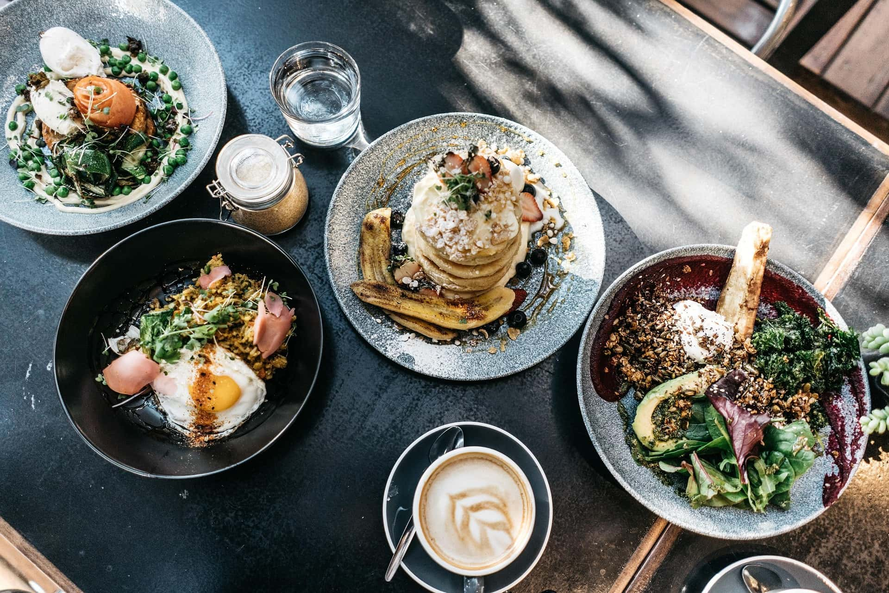

ヘルシフードカフェ
NATURAL KITCHEN

Healthy & gentle coffee
カラダにやさしいコーヒーを


Enjoy organic
オーガニックをお楽しみください。


Healthy
Food

私たちのヘルシーフードは、 厳選されたオーガニック食材を使用し、 栄養バランスを考慮して調理されています。 添加物や保存料を一切使用していません。
Read More


Menu
Read More
Blog

私たちのブログでは、オーガニック食品や健康に関する情報、コーヒーの豆知識などを定期的に更新しています。 ぜひチェックしてみてください。
What's New
2025.03.01 Webサイトのリニューアル
新たに、Webサイトをリニューアルしました。

2025.02.17 期間限定販売のお知らせ
ホワイトデーチョコレートセットの販売を開始しました。
2025.02.10 期間限定販売のお知らせ
これからの季節にぴったりのさくらドリンクの販売を開始しました
Read More
About us
NATURAL KITCHEN は、 心と体にやさしいオーガニックフードと ドリンクを提供するカフェです。
Read More
Recruit


私たちのチームに参加しませんか？NATURAL KITCHENでは、オーガニック食品や健康に関心のあるスタッフを募集しています。経験者はもちろん、未経験者も大歓迎です。
Read More
Contact
ご質問やご意見がございましたら、以下の方法でお気軽にお問い合わせください。
Read More